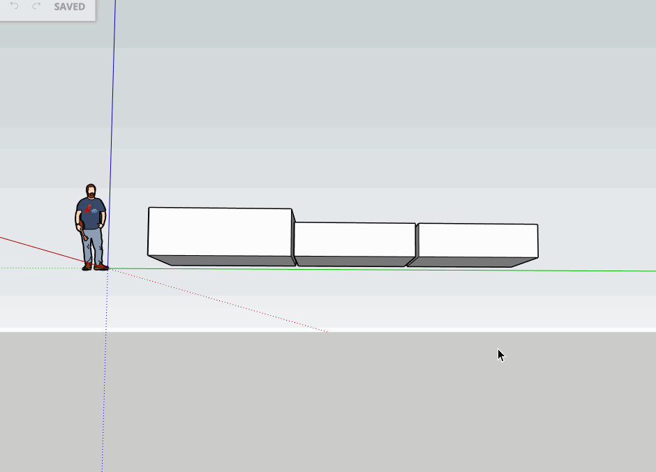

Nuova User Interface (2023)
Creazione manuale di un ordine
Lista ordini
Rivisitazione grafica: i singoli screen (2022)
Caricamento commessa proprietaria
Caricamento comessa MDC
Costruzione commessa manuale
Visualizzazione commessa pronta per stesura
Scelta colore pronto per stendere
Alarm /active
Alarm /historical
Alarm /exclusion
Approfondimento teorico: materasso 2D o 3D?
Colore pronto da stendere 2D
Viste 2D
Colore pronto da stendere 3D
Con il 3D è lo user che sceglie la vista

L'idea: mostra 3D
- Default vista 2D, sia in commessa che in stesura
- Lo user può selezionare opzione: vista 3D
- La vista 3D permette di vedere i teli stesi
- Il visualizzatore 3D permette allo user di manipolare il materasso
- Manipolando il materasso in 3D lo user può vederlo in 2D